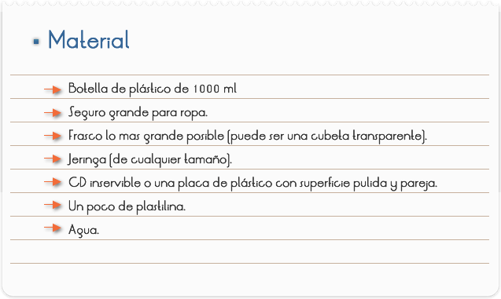
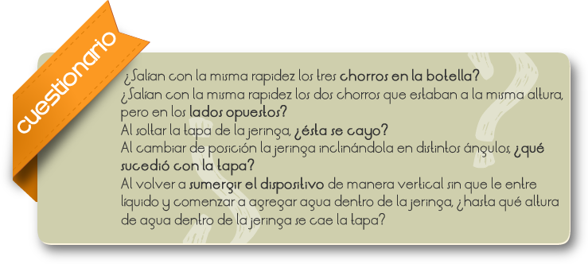

Introducción
En Física y disciplinas afines la presión es una magnitud física que mide la fuerza por unidad de superficie, y sirve para caracterizar como se aplica una determinada fuerza resultante sobre una superficie.
Objetivo
Observar de qué depende la presión dentro de un líquido.
Observar en que dirección se ejerce la presión dentro de un líquido.

La práctica está diseñada para que se efectúe en equipos:
PRIMERA PARTE: Llenen con agua la botella de plástico. Después, hagan un agujero con el seguro de ropa en la parte superior de la botella y tapen el agujero con un poco de plastilina, luego realicen otros agujeros debajo del primero de tal forma que queden en columna uno sobre otro (el segundo agujero debe quedar a la mitad de la botella y el tercero casi hasta el fondo) y tápenlos con un poco de plastilina.
Después de lo anterior, quitarán los tres tapones de plastilina y observaran el comportamiento de los chorros. Pueden ir agregando mas agua la botella para que no se vacíe y tengan tiempo para observar con más detenimiento. Después, cuando la botella esté vacía, hagan otro agujero a la misma altura que el más bajo, pero en el lado opuesto; agreguen agua suficiente, observen los chorros y compárenlos.
SEGUNDA PARTE: Quiten el émbolo a la jeringa, recorten un pequeño pedazo de lámina de Cd de manera que tape la salida más ancha de la jeringa. Una vez preparado el dispositivo, sumérjanlo en la cubeta con agua empujando la tapa con un dedo para que no penetre el agua (el agua no debe entrar en la jeringa por la parte de arriba). Una vez que esté casi hasta el fondo, suelten la tapa y vean si se cae o no.
Posteriormente, muevan de posición la jeringa inclinándola en distintos ángulos (sin que le entre el agua), siempre observando lo que sucede.
Para finalizar, vuelvan a sumergir el dispositivo de manera vertical sin que entre el líquido, después comiencen a agregar agua dentro de la jeringa (pueden utilizar otra jeringa con su aguja para meter el agua).
Nota: A veces no es fácil evitar que se filtre el agua dentro de la jeringa a través de la tapa; si el agua se filtra de manera más o menos lenta se pueden hacer los experimentos, pero tendrán menos tiempo de observación.
Cuestionario

Comentarios
PRIMERA PARTE
¿Cómo supieron si los tres chorros salían con la misma rapidez o no de los agujeros de la botella?, ¿a qué se debió?, ¿Qué tiene que ver la altura de la columna con la presión?
¿Qué significa que los dos chorros opuestos salgan con la misma presión pero en direcciones distintas? Si tienes dudas, relacionen sus respuestas con el segundo objetivo.
Si hicieran más hoyos a la misma altura de los dos opuestos, ¿qué pasaría con los chorros resultantes?, ¿saldrían con la misma rapidez? Compruébenlo.
SEGUNDA PARTE
¿Por qué piensan que en la tapa se comportó como lo hizo cuando la jeringa solo contenía aire?
¿Por qué la tapa se comportó como lo hizo cuando el agua entró en la jeringa?
¿Qué tiene que ver lo anterior con la manera en que la posición del agua aplicada al dispositivo?
Nota: la rapidez con la que salen los chorros de agua depende de la presión del líquido que está por encima de ella.
A veces, cuando nos sumergimos hasta el fondo de una alberca se nos "tapan" o duelen los oídos, entra mas hondo nos sumergimos, mayor es esta sensación, en los oídos hay una membrana muy sensible a la presión llamada tímpano. El porqué de lo anterior los puedes encontrar al realizar la siguiente actividad.